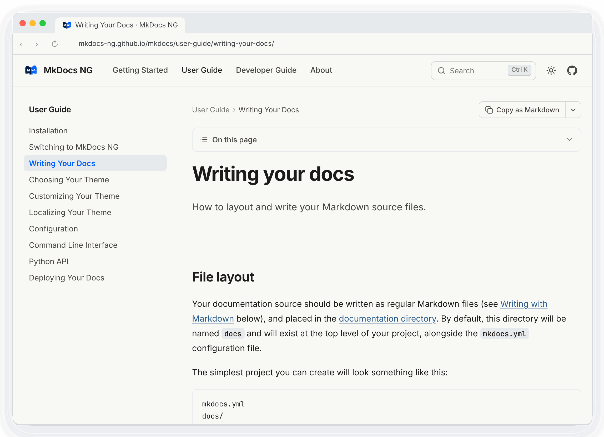

Write Markdown.
Ship docs.
The maintained MkDocs that keeps your plugins working. One YAML file turns your Markdown into a fast, simple and good-looking documentation site you can host anywhere.
site_name: My Project
nav:
- Home: index.md
- Guide: guide.md
theme:
name: mkdocs # or readthedocs, sumi, material...
plugins:
- search
- Plugins and themes tested
- 32
- Upstream bugs fixed
- 20
- Python up to 3.15
- 3.10+
- Config changes to switch
- 0
Everything a docs site needs, from one YAML file.
Great themes available
Use a built-in theme, mkdocs or readthedocs, pick Sumi or one of the many third-party themes, or build your own.
Easy to customize
Customize your theme, install plugins, change Markdown's behavior with extensions. Many configuration options are available.
Preview as you work
The built-in dev server shows your documentation as you write it, and reloads the browser whenever you save.
Host anywhere
MkDocs NG builds a completely static site that you can host on GitHub Pages, Amazon S3, or anywhere else.
Your plugins keep working
Hundreds of plugins and Markdown extensions add API docs, blogs, redirects, diagrams and more. The most popular ones are built against every change.
Written for agents too
Every page can have a Markdown copy and the site an llms.txt, so coding agents read your docs as easily as people do.
Good-looking docs out of the box.
Sumi is the theme made for MkDocs NG, and the one this site uses. Install it with pip install mkdocs-sumi.
- Search as a command palette: Ctrl K searches every heading.
- Light and dark modes, with fonts, icons and search bundled. No CDN.
- Landing pages, a blog and a releases page from plain Markdown.

Switching is a package change.
MkDocs NG keeps the mkdocs command, imports and configuration. Your plugins and themes keep working, and bugs that stayed open upstream are fixed. See how it compares to the alternatives.
pip install -U mkdocs-ng
mkdocs --version
mkdocs serve
Start writing.
MkDocs NG is free and open source under the BSD 2-Clause license.